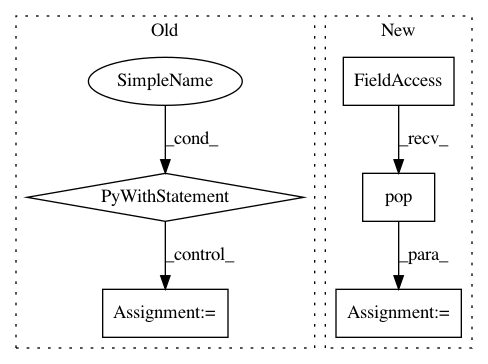

0455296d8bf79935d6b0bb138963fcd32f6871ca,fixcoverage.py,,main,#Any#,5
Before Change
def main(argv):
source = argv[1]
dest = argv[2]
with open(".coverage", "rb") as f:
coverage_data = pickle.load(f)
// Prefilter to filenames in dit
filenames = [filename for filename in coverage_data["lines"].keys()
if "dit" in filename]
for filename in filenames:
After Change
for filename in filenames:
new_filename = re.sub(source, dest, filename)
if new_filename != filename:
cd._lines[new_filename] = cd._lines.pop(filename)
cd.write_file(".coverage")
if __name__ == "__main__":
In pattern: SUPERPATTERN
Frequency: 3
Non-data size: 5
Instances
Project Name: dit/dit
Commit Name: 0455296d8bf79935d6b0bb138963fcd32f6871ca
Time: 2016-04-15
Author: ryangregoryjames@gmail.com
File Name: fixcoverage.py
Class Name:
Method Name: main
Project Name: mlflow/mlflow
Commit Name: 06e9433720845ab9f12e7ea0d8a8982123f093c6
Time: 2020-12-18
Author: 39497902+dbczumar@users.noreply.github.com
File Name: tests/autologging/fixtures.py
Class Name:
Method Name: test_mode_off
Project Name: mlflow/mlflow
Commit Name: 06e9433720845ab9f12e7ea0d8a8982123f093c6
Time: 2020-12-18
Author: 39497902+dbczumar@users.noreply.github.com
File Name: tests/autologging/fixtures.py
Class Name:
Method Name: test_mode_on